<div class="modal-dialog modal-lg modal-dialog-centered" role="document">
  <div class="modal-content">
    <div class="modal-header text-center pb-0">
      <h1 class="p-2 m-auto">Plate-forme de téléchargement de films/séries</h1>
      <button type="button" class="btn-close" data-bs-dismiss="modal" aria-label="Close"></button>
    </div>
    <div class="modal-body pt-2">
      <p class="text-uppercase text-center date mb-2"><i class="fas fa-calendar-alt"></i> Novembre - Décembre 2020</p>
      <p class="text-center git"><i class="fab fa-github"></i> <a href="https://github.com/Marie287/Projet-Base-de-Donnees" target="_blank">github.com/Marie287/Projet-Base-de-Donnees</a></p> 

      <div class="accordion accordion-flush" id="accordion_fs">
        <div class="accordion-item">
          <h2 class="accordion-header" id="acc_fs_1">
            <button class="accordion-button collapsed" type="button" data-bs-toggle="collapse" data-bs-target="#collapse_fs_1" aria-expanded="false" aria-controls="collapse_fs_1">
              Description
            </button>
          </h2>
          <div id="collapse_fs_1" class="accordion-collapse collapse" aria-labelledby="acc_fs_1" data-bs-parent="#accordion_fs">
            <div class="accordion-body">
              <div class="text-center">
                <i class="fas fa-database icon_outils" title="PostgreSQL"></i>
                <i class="fab fa-html5 icon_outils" title="HTML"></i>
                <i class="fab fa-css3-alt icon_outils" title="CSS"></i>
                <i class="fab fa-bootstrap icon_outils" title="Bootstrap"></i>
                <i class="fab fa-php icon_outils" title="PHP"></i>
              </div>
              <p class="text-center" style="color: #846828;">
                <span class="text-uppercase" style="letter-spacing: 1px;">Type de réalisation </span>: Projet à Polytech' Lille
              </p>
              <p class="mb-0">
                Notre projet était de créer une plateforme de téléchargement de films par équipe de 3. Nous avons utilisé 
                <a href="https://trello.com/fr" target="_blank">Trello</a> pour nous répartir les tâches 
                et le GitLab de l'Université pour maintenir notre code.
              </p>
            </div>
          </div>
        </div>
        <div class="accordion-item">
          <h2 class="accordion-header" id="acc_fs_2">
            <button class="accordion-button collapsed" type="button" data-bs-toggle="collapse" data-bs-target="#collapse_fs_2" aria-expanded="false" aria-controls="collapse_fs_2">
              Fonctionnalités
            </button>
          </h2>
          <div id="collapse_fs_2" class="accordion-collapse collapse" aria-labelledby="acc_fs_2" data-bs-parent="#accordion_fs">
            <div class="accordion-body">
              <ul>
                <li>Inscription et connexion des utlisateurs ou modérateurs</li>
                <li>Consulter la liste des films et séries</li>
                <li>Ajouter un nouveau film ou une nouvelle série</li>
                <li>Ajouter des vidéos au film : film ou bande-annonce</li>
                <li>Modifier les informations du film</li>
                <li>Supprimer un film, une série, ou un épisode de série</li>
                <li>Gérer les acteurs</li>
                <li>Gérer les utilisateurs et de leurs abonnements</li>
                <li>Historique de l'utilisateur : les films ou séries les plus téléchargées, les catégories populaires, les bandes-annonces déjà visionnées</li>
                <li>Recherches de films par mot clé, par catégorie ou par nom d'acteur</li>
              </ul>
            </div>
          </div>
        </div>
        <div class="accordion-item">
          <h2 class="accordion-header" id="acc_fs_3">
            <button class="accordion-button collapsed" type="button" data-bs-toggle="collapse" data-bs-target="#collapse_fs_3" aria-expanded="false" aria-controls="collapse_fs_3">
              Ce que j'en ai pensé
            </button>
          </h2>
          <div id="collapse_fs_3" class="accordion-collapse collapse" aria-labelledby="acc_fs_3" data-bs-parent="#accordion_fs">
            <div class="accordion-body">
              <p>
                Le délai de réalisation était très court alors la fonctionnalité du site web était plus prioritaire que le design général. 
                La répartition des tâches avec l'outils <a href="https://trello.com/fr" target="_blank">Trello</a> a vraiment été d'une grande utilité. Globalement les fonctionnalités demandées 
                fonctionnent à merveille, c'est aussi complet que nous l'imaginions ! 😃
              </p>
            </div>
          </div>
        </div>
      </div>
      
      <br>
      <div id="carousel_fs" class="carousel slide carousel-dark" data-bs-ride="carousel">
        <div class="carousel-indicators">
          <button type="button" data-bs-target="#carousel_fs" data-bs-slide-to="0" class="active" aria-current="true" aria-label="Slide 1"></button>
          <button type="button" data-bs-target="#carousel_fs" data-bs-slide-to="1" aria-label="Slide 2"></button>
          <button type="button" data-bs-target="#carousel_fs" data-bs-slide-to="2" aria-label="Slide 3"></button>
          <button type="button" data-bs-target="#carousel_fs" data-bs-slide-to="3" aria-label="Slide 4"></button>
          <button type="button" data-bs-target="#carousel_fs" data-bs-slide-to="4" aria-label="Slide 5"></button>
          <button type="button" data-bs-target="#carousel_fs" data-bs-slide-to="5" aria-label="Slide 6"></button>
          <button type="button" data-bs-target="#carousel_fs" data-bs-slide-to="6" aria-label="Slide 7"></button>
          <button type="button" data-bs-target="#carousel_fs" data-bs-slide-to="7" aria-label="Slide 8"></button>
          <button type="button" data-bs-target="#carousel_fs" data-bs-slide-to="8" aria-label="Slide 9"></button>
          <button type="button" data-bs-target="#carousel_fs" data-bs-slide-to="9" aria-label="Slide 10"></button>
          <button type="button" data-bs-target="#carousel_fs" data-bs-slide-to="10" aria-label="Slide 11"></button>
          <button type="button" data-bs-target="#carousel_fs" data-bs-slide-to="11" aria-label="Slide 12"></button>
        </div>
        <div class="carousel-inner">
          <div class="carousel-item active">
            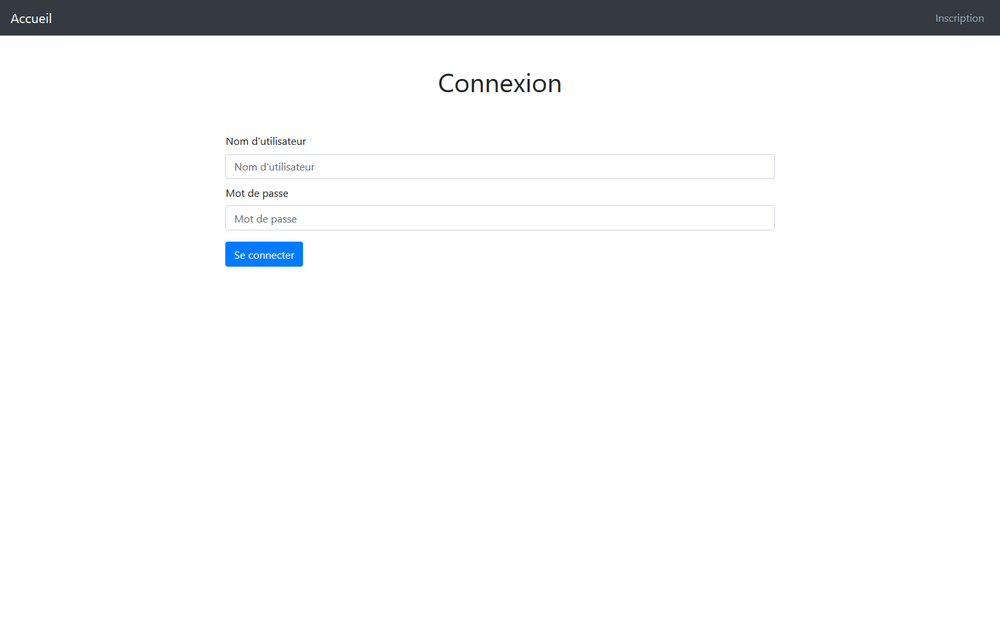
          </div>
          <div class="carousel-item">
            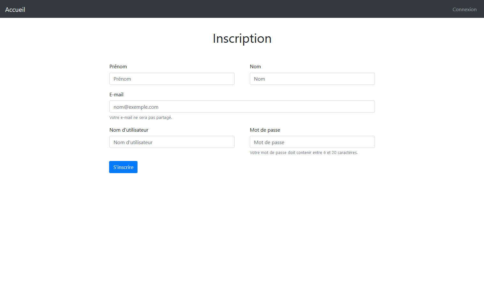
          </div>
          <div class="carousel-item">
            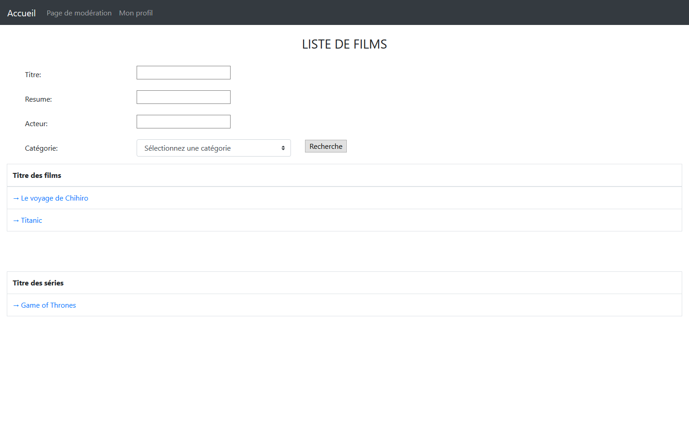
          </div>
          <div class="carousel-item">
            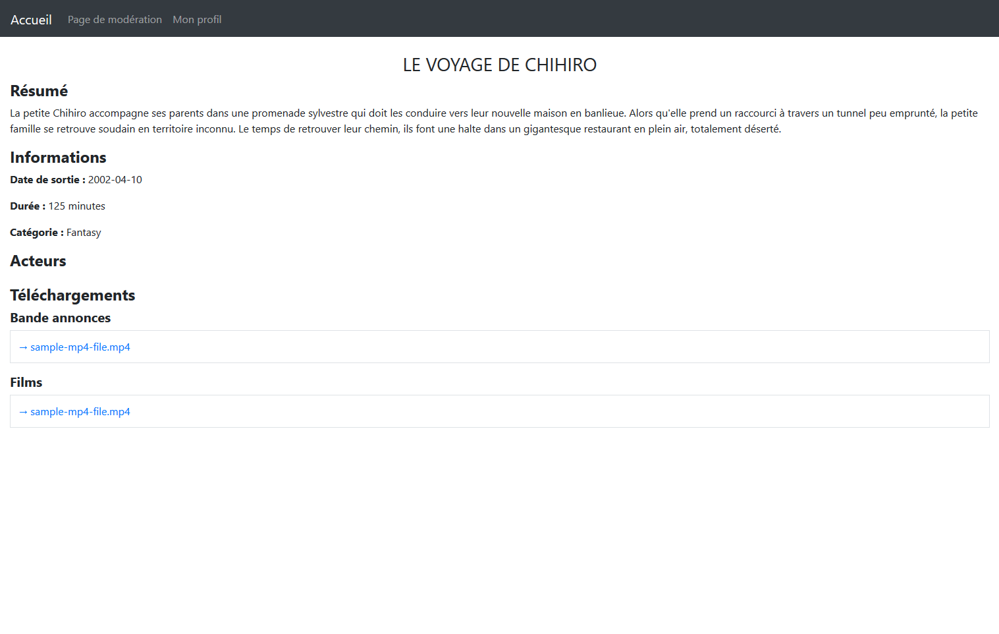
          </div>
          <div class="carousel-item">
            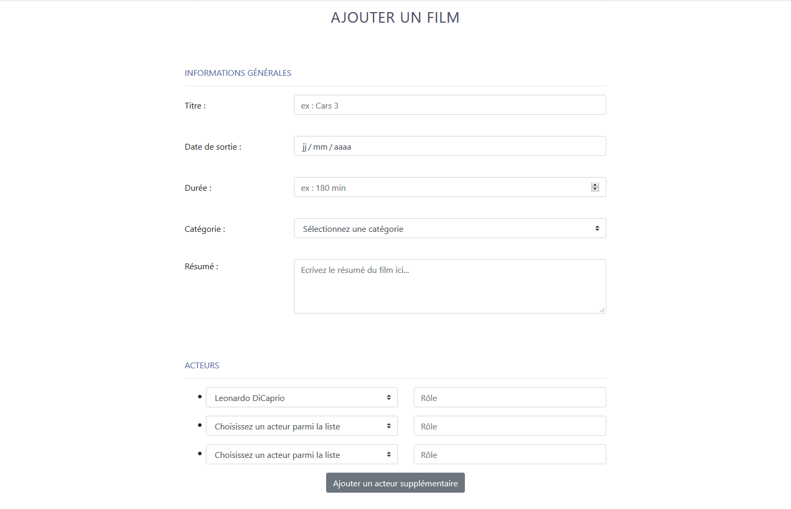
          </div>
          <div class="carousel-item">
            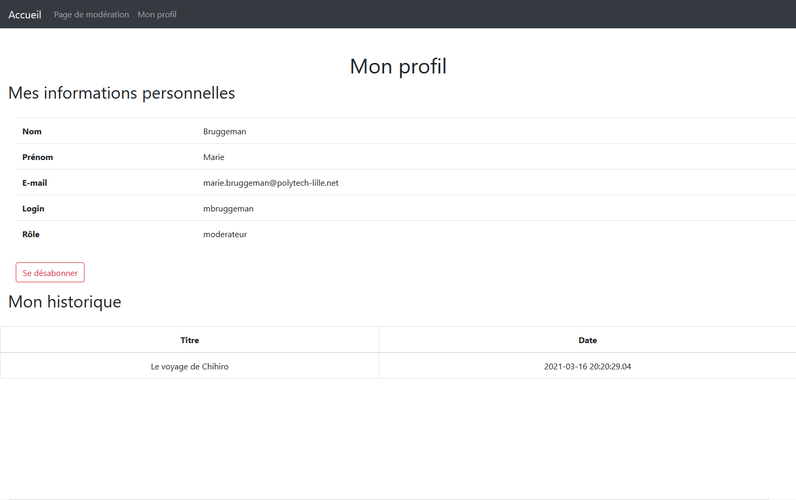
          </div>
          <div class="carousel-item">
            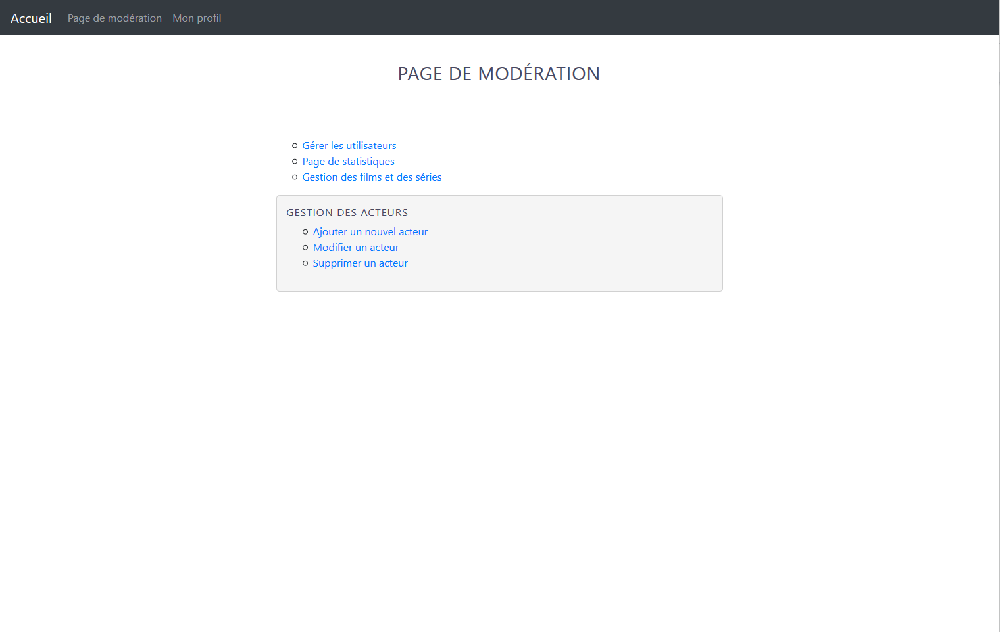
          </div>
          <div class="carousel-item">
            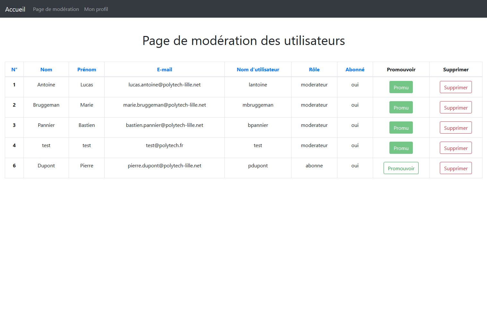
          </div>
          <div class="carousel-item">
            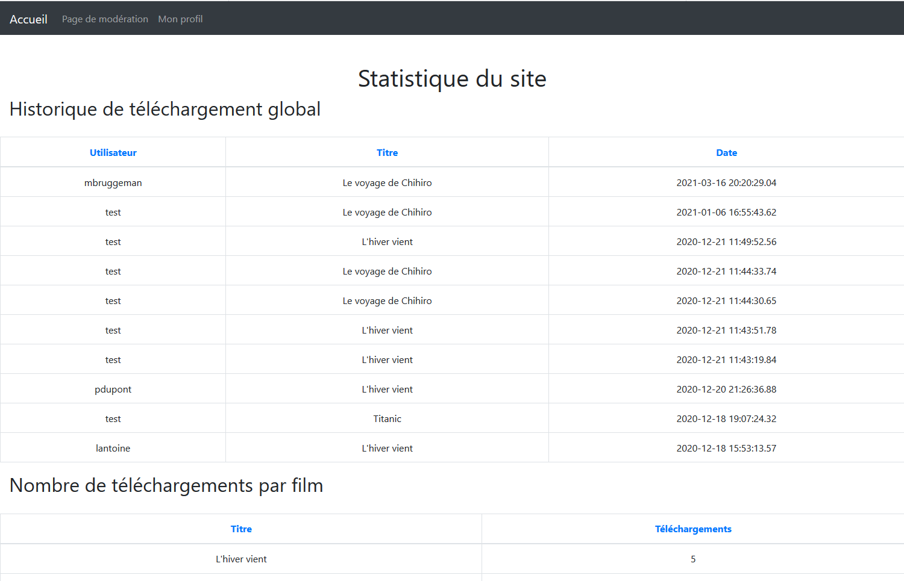
          </div>
          <div class="carousel-item">
            
          </div>
          <div class="carousel-item">
            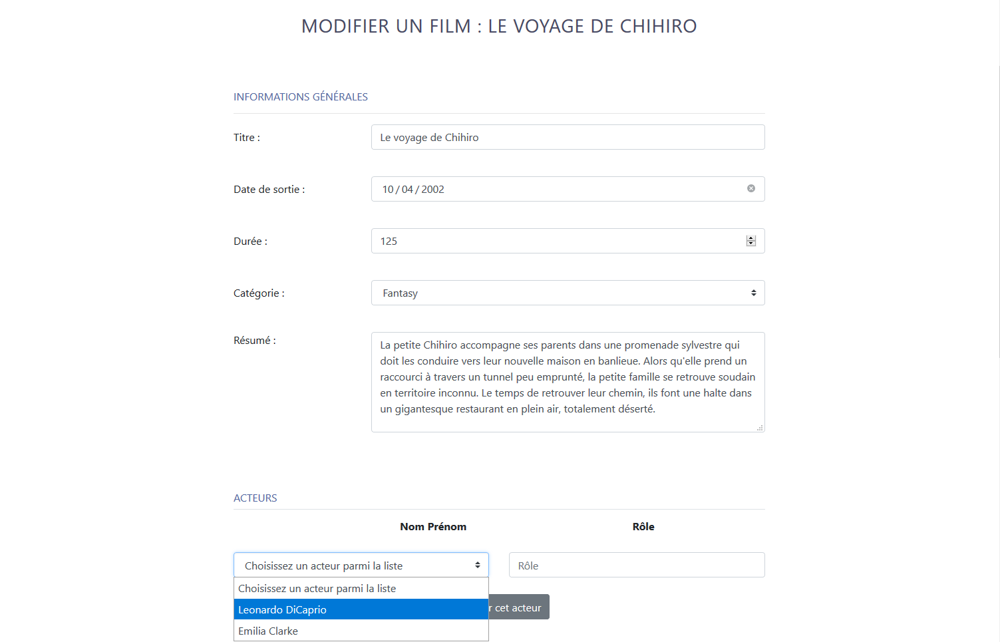
          </div>
          <div class="carousel-item">
            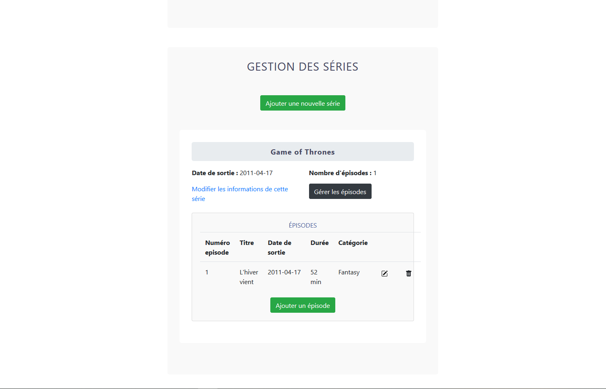
          </div>
          
        </div>

        
        <button class="carousel-control-prev" type="button" data-bs-target="#carousel_fs"  data-bs-slide="prev">
          <span class="carousel-control-prev-icon" aria-hidden="true"></span>
          <span class="visually-hidden">Previous</span>
        </button>
        <button class="carousel-control-next" type="button" data-bs-target="#carousel_fs"  data-bs-slide="next">
          <span class="carousel-control-next-icon" aria-hidden="true"></span>
          <span class="visually-hidden">Next</span>
        </button>
      </div>
    </div>
  </div>
</div>